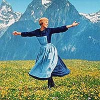
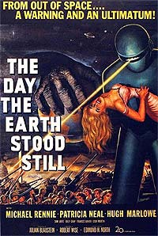
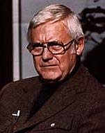
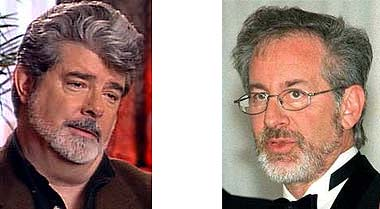
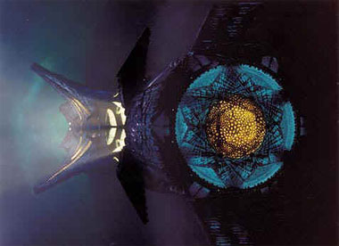

|
Obrigado,
Robert Wise
  A
primeira vez que eu fui ao cinema, foi com a minha me e a minha
irm, em Olaria, Zona Norte do Rio de Janeiro. Esse um bairro ao
lado de Ramos, onde fazemos nossa reunio trekker. O cinema era um
verdadeiro cine-teatro, daqueles que viraram clube, igreja ou foram
demolidos. O filme era "A Novia Rebelde", de Robert
Wise. Eu tinha cinco anos de idade, fiquei admirado com as cores,
mas com muito medo do escuro. Como chorei muito, minha me nos
levou embora bastante contrariada.
 Alguns
anos mais tarde, eu continuava com medo de escuro, assim como de
discos voadores. Ento, eu vi um outro filme de Robert Wise,
chamado "O Dia em que a Terra Parou". Fiquei fascinado e
revi vrias vezes, em reprises na televiso, at que um dia as
lojas passaram a vender videocassetes. Nesse tempo eu tambm j
assistia Srie Clssica, em preto e branco. A partir da,
j estava completamente tomado pela fico cientfica.
Robert Wise e Jornada se juntaram na realizao do primeiro
filme lanado para completar as aventuras da tripulao original
da Enterprise. Agora, temos a verso em DVD, com cenas inditas,
mais prximas das intenes do diretor. Estamos aqui em Ramos
para v-la. Aqui terra de sambistas como Dicr, o bloco Cacique
de Ramos e a escola de samba Imperatriz Leopoldinense. Tem praia
poluda, mas tem tambm um piscino limpssimo. Assim, estamos
muito bem acompanhados... Das novidades e detalhes dessa nova verso,
vocs j sabem por aquilo que meus colegas do TB escreveram
nesses dias. Eu vou falar do seu diretor.
 Queria
comear dizendo o que bvio e inegvel. Robert Wise um
grande diretor, daqueles que o mundo produz uma pequena safra. Os
seus mritos nesta nova verso de "Jornada nas Estrelas -
O Filme" esto relacionados ao seguinte.
Em primeiro lugar, aceitar o desafio quase indito de transpor para
o cinema uma obra produzida para a televiso. Algum pode achar
que isto se torna mais fcil quando se trata de um sucesso
fenomenal, mas exatamente o contrrio. Tanto assim que at
hoje muita gente torce o nariz para o filme, dizendo que o seu ritmo
no tem nada a ver com o seriado. Mas devemos nos lembrar das
diferenas de linguagem entre o cinema e a televiso.
Em segundo lugar, Robert Wise aceitou o desafio de dirigir um filme
de fico cientfica logo depois de George Lucas ter feito
"Guerra nas Estrelas", modificando a linguagem do cinema
em nome das caractersticas televisivas. O seu sucesso aconteceu em
muito porque uniu os efeitos especiais a um roteiro que tem mais ao
do que contedo. Spielberg enveredou pelo mesmo caminho e se tornou
o papa deste formato. Depois, ele resolveu fazer filme com mais
seriedade, como "A Cor Prpura" e "A Lista de
Schindler".

Em terceiro lugar, Robert Wise encarou uma trabalho enorme com a
excessivas alteraes de roteiro, transtornos da produo, exigncias
do estdio e de Gene Roddenberry. Uma boa dose de pacincia foi
gasta para filmar, refilmar, descartar e incorporar aquilo que os
outros determinavam. No fim de tudo, ainda teve (e tem) de aturar a
comunidade trekker, zelosa do objeto de sua adorao, mas tambm
cheia de muita gente chata e idiossincrtica ao extremo.
Em quarto lugar, Robert Wise teve o mrito de propor o relanamento
do filme, com um acabamento mais redondo e de acordo com aquilo que
ele gostaria de mostrar. As cenas includas nos do uma percepo
melhor do roteiro. Isto sem falar no aumento da beleza do filme, com
mais detalhes nas tomadas nos planos gerais e nos planos fechados.
Os dilogos acrescentados, como as falas de Spock sobre VGer e o
desembarque do grupo para religar a sonda, contriburam para
melhorar as coisas. isto que penso ser o mais importante:
entender melhor a relao criador versus criatura. No caso da
sonda da Nasa, perguntar e responder muito mais fcil do que no
nosso, no mesmo?!
O filme em si continuou longo, com aquelas cenas enormes de tomadas
da Enterprise e da nave de VGer, que agora, enfim, aparece vista
do lado externo. Afinal de contas, Wise no tem nada a ver com
Lucas e Spielberg, para a decepo de muitos. Apesar de tudo, o
resultado final, certamente, aumentou o nmero de acertos.

Melhor pararmos por aqui, seno eu teria de falar das caras e bocas
de Ilia, do "gelol" que a doutora Chapel passa em Chekov,
dos "pijamas" da tripulao, da silhueta de Darth Vader
e da nave aliengena meio "Mimbari", meio
"Taelon" daquela criancinha pirracenta e inquieta.
A nova verso ajuda a dar ao filme e ao seu diretor o respeito que
eles merecem. Mais uma vez, valeu Bob!
P.S.: Falando em criancinha, aproveito o clima e dedico esta
matria a Julia, minha sobrinha, Isabela, filha de Oswaldo, e
Lucas, filho de Chacal. Eles j nasceram trekkers e representam um
pouco da nossa esperana no futuro.
Cludio
Silveira escreve regularmente sobre os filmes com
exclusividade para o Trek Brasilis
|